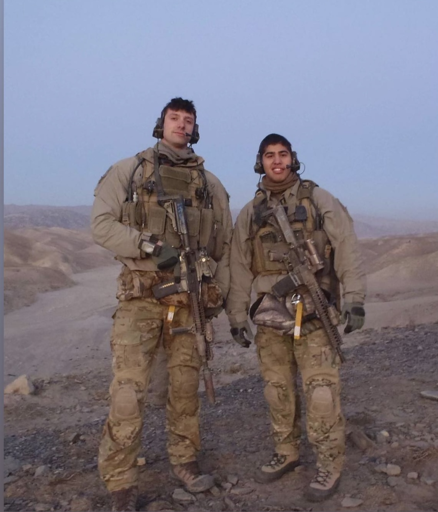
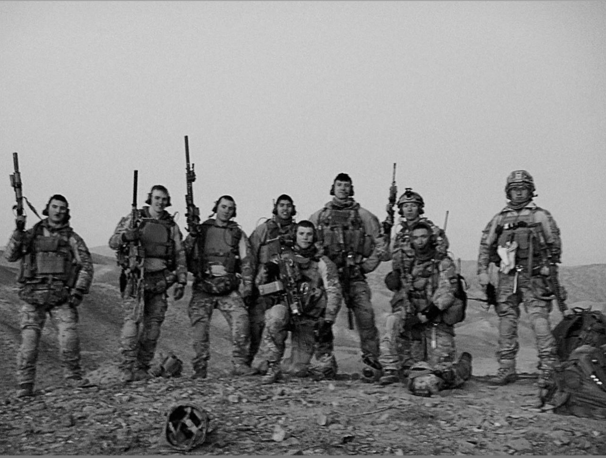

Hey there, I'm Israel Padilla, and I've had quite the journey so far! At 43 years old, I've lived a life full of thrilling experiences and diverse paths. From serving in the military to working in the corporate world, I'm now embarking on an exciting new adventure in the tech and coding field.
I kicked off my journey at the age of 18 when I enlisted in the military as an infantry soldier, driven by my deep desire to serve my country. For over a decade, I dedicated myself to the 75th Ranger Regiment, proudly serving under the esteemed 3rd Ranger Battalion. During my time there, I was privileged to be a part of the special operations unit, participating in challenging missions around the world. From deployments in Kosovo, Afghanistan, Iraq, Africa, and Colombia to collaborating with esteemed units like CAG (Delta Force), Special Forces, Navy SEAL teams, Marine Corps, and Air Force Special Operations, I've truly experienced the camaraderie and dedication of our armed forces.
Before my military journey, I had the opportunity to live in various countries such as Puerto Rico, New York, Sweden, and Japan. Growing up in different places allowed me to embrace diverse cultures and perspectives. As I pursued higher education, I attended NYU and the University of Portland, expanding my knowledge and fostering a well-rounded mindset.
Following honorable military service, I joined the Department of Homeland Security, using my skills to contribute to the safety and security of our nation. However, my passion for technology led me to explore new avenues, eventually finding myself working for Comcast/NBC Universal. There, I honed my skills in sales and tech support, always striving to deliver exceptional customer experiences.
But the call of my true passion couldn't be ignored. That's why I made the decision to join Epicodus, ready to dive back into the tech and coding field. Although I'm starting as a beginner, I'm looking forward to the challenges that lie ahead. There's something incredibly satisfying about pushing myself and succeeding in this ever-evolving industry. I can't wait to apply my unique perspective and skills to contribute to the exciting world of technology.
In a nutshell, my name is Israel Padilla, and I embody courage, dedication, and a constant thirst for personal and professional growth. From my time in the military, specifically the 75th Ranger Regiment, to my diverse educational background and corporate experiences, I've learned to adapt and thrive. Now, as I embrace the world of tech and coding through Epicodus, I'm ready to conquer new challenges, make my mark, and create a future that merges my passion with my skills.
check out 3rd Ranger Battalion 75th Regiment